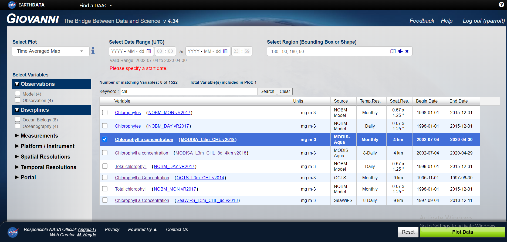

Analyses and visualizations used in this tutorial were produced with the Giovanni online data system, developed and maintained by the NASA GES DISC.
Link: giovanni.gsfc.nasa.gov/giovanni
To use the Giovanni online data system in the same way as I have in this tutorial you’ll need to register a user with the platform. Simply click on the Login button on the landing page followed by the Register button when you are redirected.
Once registered, follow the steps below:
swfqwef

## Packages
if(!require("httr")){
install.packages("httr")
library("httr")
}
## Climatology - Monthly & Seasonal Averages
setwd("D:/GoogleDrive/ASCA2018/ASCA_SEAmesterIII/Remote Sensing/Clha-Climatology-Seasons")
urls <- read.csv("Monthly&SeasonalAverages.txt", header = F)
urls <- as.character(urls$V1)
setwd("D:/GoogleDrive/ASCA2018/ASCA_SEAmesterIII/Remote Sensing/Clha-Climatology-Seasons/files")
pb <- winProgressBar(title = "progress bar", min = 0,
max = length(urls), width = 300)
for (i in 1:length(urls)) {
tmp <- paste(paste("url_",i,"_ClimChla", sep = ""),"nc", sep = ".")
GET(urls[i],
authenticate(un, key_get("R_passwords", un)),
write_disk(tmp, overwrite = F))
setWinProgressBar(pb, i, title=paste(round(i/length(urls)*100, 0),
"% done"))
Sys.sleep(0.1)
}
close(pb)Find the coding for this website here: github.com/Parrott-R/Me
prrrua001@myuct.ac.za